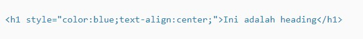

Tipe yang pertama adalah Inline CSS. Seperti namanya, kode CSS ini langsung ditempatkan di dalam baris kode HTML. Contohnya adalah seperti ini:
Jadi, kode HTML nya sendiri hanyalah penjelasan tentang heading. Namun, kode CSS dimasukkan untuk menambahkan style di sana, yaitu dengan menambahkan warna biru dan meratakan tulisan menjadi di tengah. Yang terpenting dari Inline CSS adalah pengaruhnya. Style yang diberikan di sini spesifik hanya untuk heading, tidak untuk elemen HTML lainnya.